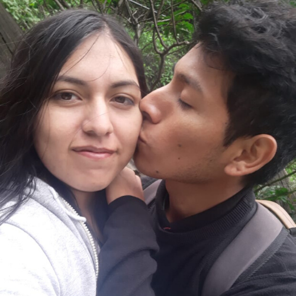

Nosotros

Nosotros somos de las mejores parejas que se han formado en este planeta, somo personas simples que han sabido amarse, que han puesto de su parte para hacerse felices el uno al otro, futuros ingenieros, futuros padres de Joseph y Cielito, padres actuales de nuestro Rabillo. Amantes empedernidos, con tantas ganas de ... abrazarse y .... besarse y ... darse muuucho AMor.